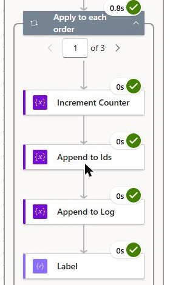
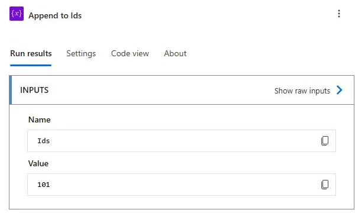
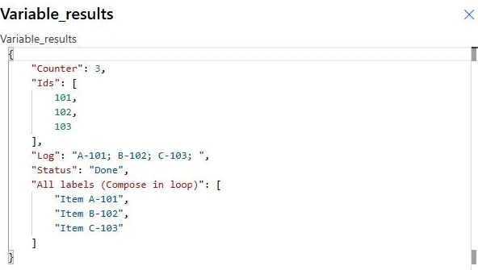
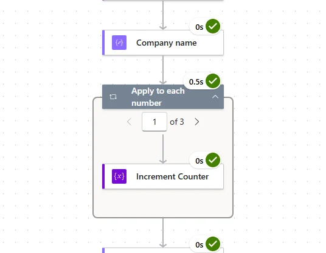

- Power Automate
- Level 1 · Foundations · 5 of 7
Variables vs Compose: the complete guide
A variable is a named box you can change during the run. A Compose works out one value and keeps it. Choosing the right one makes flows faster, safer in parallel loops and easier to read.
| Section | You'll learn |
|---|---|
| 1 · The difference | A decision diagram and comparison |
| 2 · Every variable action | Initialize, Set, Increment, Append (string and array) |
| 3 · Variables in a loop, traced | Counter, Ids and Log after each iteration |
| 4 · Compose inside a loop | Collect every iteration's result without a variable |
| 5 · Loops running in parallel | Why variables give wrong totals |
1 · The difference
A-101, B-102, C-103: count them, collect their numbers, keep a log, and label each one.Which one?
outputs('Name')| Variable | Compose | |
|---|---|---|
| Can change? | Yes | No |
| Created where | Top level only (not in loops, conditions or scopes) | Anywhere |
| Read with | variables('Counter') | outputs('Label') |
| Inside a loop | One shared value for all iterations | One result per iteration |
| Parallel loops | Risky | Safe |
| Best for | Counters, totals, building lists | Constants, calculated values, debugging |
2 · Every variable action
| Action | Works on | Demo | Note |
|---|---|---|---|
| Initialize variable | Any type | Counter (Integer, 0), Log (String, ""), Ids (Array, []), Status (String, "New") | Top level only; the type is fixed here |
| Set variable | Any type | Status = "Done" | Replaces the value |
| Increment / Decrement variable | Integer, Float | Counter + 1 | Default step is 1 |
| Append to string variable | String | Log += "A-101; " | Adds to the end |
| Append to array variable | Array | Ids += 101 | Adds one item |
Watch out
- A variable can't be set from itself:
Set Counter = add(variables('Counter'), 1)is refused. Use Increment. - Initialize every variable at the top, even ones used only in a later branch.
3 · Variables in a loop, traced


int(last(split(item(), '-'))) turned A-101 into the number 101.After each iteration
| Iteration | item() | Counter | Ids | Log |
|---|---|---|---|---|
| 1 of 3 | A-101 | 1 | [101] | "A-101; " |
| 2 of 3 | B-102 | 2 | [101,102] | "A-101; B-102; " |
| 3 of 3 | C-103 | 3 | [101,102,103] | "A-101; B-102; C-103; " |
Then Set Status changes “New” to “Done”.
int(last(split(item(), '-')))| Piece | What it does |
|---|---|
split(item(), '-') | A-101 → ["A", "101"] |
last(...) | "101" |
int(...) | 101 as a number, so Ids is a list of numbers |
4 · Compose inside a loop: every result, no variable
outputs('Label') returns all of them as a list.Item @{item()} inside the loop.
Same list, two ways
variables('Ids')outputs('Label') after the loopFor turning one list into another, Select is better still: no loop at all (see Select, Filter array and Join).
5 · Loops running in parallel
Is it safe to turn on concurrency?
Increment and Decrement are applied one at a time, so a counter still adds up, but the value you read with variables() mid-iteration may belong to another iteration. Order-dependent logic needs a sequential loop.

New to this? Start from the basics optional
Initialize variable: creates a variable with a name, type and starting value.
Apply to each: runs its actions once per item in a list.
Build it step by step optional
- Initialize Counter (Integer 0), Log (String), Ids (Array) and Status (String “New”) at the top.
- Add Apply to each over
createArray('A-101','B-102','C-103')with Increment, Append to array, Append to string and a Compose Label. - After the loop: Set Status to “Done” and a Compose that shows all four variables plus
outputs('Label'). - Run, step through iterations, then open the final Compose.
Common mistakes
- A variable for a value that never changes.
- Concurrency on a loop that sets or appends.
- Initializing inside a loop or condition (not allowed).
- A loop with Append to array where Select would do.